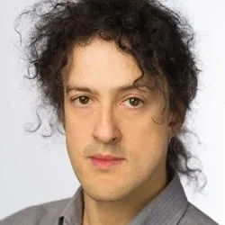

Archival
Full papers
Up to 8 pages, excluding references · CVPR 2027 style
Published in the CVPR 2027 workshop proceedings. Three reviews per paper.
Workshop proposal · CVPR 2027
From Vision to Experiments
How can we learn world states of living systems from visual observations, predict how these states evolve over time and under interventions, and generate trustworthy future states?
Call for papers The three questions
Proposed to CVPR 2027. CVPR announces its decision on 22 December 2026. If the workshop is accepted, the call for papers opens in January 2027.
About
Living systems, from molecules to organisms, change under genes, drugs, and time, yet images and molecular profiles offer only partial, often unpaired views of these changes. This workshop asks how to learn world states from visual observations, predict how these states evolve over time and under interventions, and generate trustworthy future states.
Beyond realism, such predictions must hold up against independent measurements and unseen interventions, and help decide which experiments to run. Through invited talks, papers, and an open-problems forum, we bring together vision and life-science researchers to establish shared problems and evaluation principles for living world models.
Researchers in vision and machine learning, together with the people whose images living world models learn from. The invited talks and the panel pair methodological contributions with concrete biological questions.
Let x be an observation of a biological system: an image (a micrograph, a tissue section, a light-sheet volume, a particle image), possibly paired with molecular measurements such as a transcriptome. Let st be its latent biological state at time t, and a an intervention, such as a genetic or chemical perturbation or a combination of them, applied over an interval Δ. A living world model has the three components shown above. A contribution may address only some of them: a latent predictive model, for example, needs no decoder.
The decoder usually generates images, but also molecular or functional readouts. Other modalities serve as views of the state, as descriptions of the intervention (a compound’s structure, a gene’s sequence) that let a model reach unseen interventions, and as independent evidence the model never saw, such as a held-out assay.
Because snapshots are usually unpaired, the data often determine only how the state distribution changes, from ρt to ρat+Δ, not which state becomes which. Optimal transport, flow matching, and Schrödinger bridges are natural tools for this setting, but each picks one coupling among the many that match the two distributions. That coupling is an assumption (for example, least displacement) that a model should state and, where possible, test against lineage tracing or live imaging.
Key questions
The workshop is organized around one core question. How can we learn world states of living systems from visual observations, predict how these states evolve over time and under interventions, and generate trustworthy future states? Vision world models answer it for video, where occlusion is usually transient and predictions are judged by realism and physical plausibility. Living systems meet the same difficulties in a more extreme form, and raise one key question at each component. Talks, papers, and the panel address these three.
![Two-row diagram with three columns, one per world-model component: learn world states, predict dynamics, generate future states. Vision world models (top row) learn from continuous video, where occluded parts usually reappear, predict the next state under an action, and are judged by realism and physical plausibility. Living world models (bottom row) face one key question at each component. Q1: images across scales show only part of the biological state. Q2: dynamics must be learned from unpaired snapshots, and most combinations of interventions are never tested. Q3, tested by experiments: a generated future image is set beside the measured image under the same intervention and checked for consistency with known biology, for calibration, and for hallucination, along an evaluation ladder of fidelity, biology, validity and utility. Dashed outlines mark generated images.](assets/img/figure1.svg)
What is the state of a living system, and how much of it can images reveal? How should a world model represent partially observed states across scales? Which parts become identifiable with molecular, spatial-omics, and functional measurements, often from other samples?
How can a model learn how states evolve over time and respond to drugs and genetic edits from destructive, unpaired snapshots rather than trajectories? When are the dynamics identifiable? Can a model reach unseen interventions and combinations by representing their chemical structure or target gene, and transfer to new cell types and organisms?
How should predicted states be rendered as images, videos, structures, or molecular and functional readouts, including counterfactuals? When can such predictions be trusted to guide experiments? The ladder below proposes four levels of evidence.
Q3 · Evaluation ladder Proposed for discussion, not as an established standard. The levels are ordered by strength of evidence, not as prerequisites.
The three components at four biological scales, from molecules to organisms, connect communities that rarely meet at the same venue. All four are laboratory settings: the experimenter sets the intervention, as an agent sets its action, and can test a prediction by experiment and correct the model with the result. Work at a single scale is in scope, and work that links scales is especially welcome.
Observationcryo-EM particles, predicted structures
Stateconformation
Interventionligand, mutation
Future state to generateConformational ensemble after binding or mutation, consistent with particle images
ObservationCell Painting, live-cell and high-content imaging
Statemorphological and molecular state
Interventioncompound, CRISPR edit, dose, time
Future state to generateMorphology under unseen perturbations or their combinations
Observationtissue sections, spatial omics, organoid imaging
Statecell composition, molecular programs
Interventiondrug, genetic edit, development
Future state to generateRemodeled tissue, with molecular state inferred from morphology
Observationlight-sheet imaging of embryos and larval brains
Statecell positions and lineages, neural activity
Interventiongenetic edit, drug, developmental time
Future state to generateLater development or brain activity, checked against the recording
Each sketch reads left to right: an observed image, an intervention, and the future image a living world model should generate (dashed outline).
Topics
The first three themes follow the components of a living world model. The fourth is the evaluation that makes its outputs trustworthy.
Representation learning for microscopy, Cell Painting, spatial-omics imaging, and cryo-EM. Latent states under partial observability. Alignment of images with paired or unpaired molecular, spatial-omics, and functional measurements. 3D and 4D reconstruction of biological structures.
Image-based prediction of responses to chemical and genetic perturbations. Forecasting from live-cell, developmental, and neural imaging. Optimal transport, flow matching, and Schrödinger bridges between distributions. Dynamics from unpaired populations and sparse longitudinal data, and when they are identifiable. Generalization to unseen interventions and combinations from their structure, sequence, or prior knowledge.
Image and video generation conditioned on drugs, genes, and time. Counterfactual image generation. Virtual staining and cross-modal generation. Conformational ensembles beyond static structures.
Scientific metrics and benchmarks for living world models, validation against held-out interventions and independent assays, out-of-distribution generalization, uncertainty estimation, hallucination detection, provenance of synthetic images, and interpretability.
General-purpose methods for world models, video generation, and 4D vision are in scope whenever the submission argues for their relevance to a question in the life sciences. Static representation learning and conditional image generation are in scope when they serve state inference, dynamics, or intervention prediction; segmentation or classification alone, clinical diagnosis or prognosis, and models without a visual component are not. Authors will state which components their work covers and which level of the evaluation ladder their results reach. When the call opens, this site will list public datasets that support L3 tests (held-out interventions, time points, or cell types), curated by the organizers.
Call for papers
If the workshop is accepted, submissions open on OpenReview in January 2027. The submission link and formatting instructions will be posted here.
Archival
Up to 8 pages, excluding references · CVPR 2027 style
Published in the CVPR 2027 workshop proceedings. Three reviews per paper.
Non-archival
Up to 4 pages, excluding references · CVPR 2027 style
Extended abstracts, which do not count as publications under CVPR’s dual-submission policy, and recently accepted papers from other venues. Eligible for orals and listed on this website only. Two reviews per paper.
Both tracks use double-blind review on OpenReview, except for already published papers. Every author needs a complete OpenReview profile and may appear on at most 10 submissions. At least one reviewer per paper comes from the relevant biological domain. The criteria are relevance, technical soundness, quality of evidence, and value for discussion. Organizers and reviewers recuse themselves from conflicted submissions, including those from their own institutions, and an organizer without a conflict oversees each decision.
We will present a Best Paper award and a Best Poster award, sponsored by AItonomy. The organizers manage any prize money, and the sponsor takes no part in selecting the winners. The non-archival track welcomes biology-first submissions that use vision methods, and an online mentoring hour, held by the organizers before the camera-ready deadline, supports first-time CVPR authors.
Program
About 4.5 hours with three invited talks, one per key question, oral presentations from both paper tracks, a poster session, and a panel and open-problems forum. The workshop is in person, and all talks are streamed and recorded for the CVPR virtual site.
Speakers are announced as they confirm. Each talk takes one key question, and the panel brings vision and biology researchers together.
Morning slot shown, Pacific Daylight Time. An afternoon slot keeps the same order.
Invited talks: 30 minutes plus 10 for questions. Orals: 8 minutes plus 2 for questions.
Which predictions can we test, and against what?
The panel turns Q3 into a working session, moderated by Yingcheng Wu. Each panelist opens with one prediction problem from their field and the independent data that could test it. The discussion then places these problems on the evaluation ladder: which predictions can be tested now and against what data, which outputs remain hypotheses, and which metrics reflect experimental value. Openings take 10 minutes, discussion 15, and audience questions, including questions submitted online, the last 10. The answers feed a one-page evaluation checklist, published after the workshop.
One organizer relays online questions in every Q&A slot. Authors who cannot travel may present through a prerecorded video, with their poster displayed by an organizer or coauthor. An asynchronous discussion channel stays open for two weeks after the workshop. Accepted papers, posters, and slides (with author consent) will be posted on this website. Within four weeks, the organizers will publish a one-page evaluation checklist from the forum: what was observed, what was predicted, which conditions were held out, and what independent evidence tested each prediction.
Organizers
University of Macau
PhD candidate; visiting student, National University of Singapore
Cell states and their responses to perturbations (Q1, Q2)
The Chinese University of Hong Kong
PhD student; visiting PhD researcher, Stanford University
World models from molecules to immune systems (Q2)
Princeton University
Postdoctoral Researcher; incoming Assistant Professor, Peking University
Diffusion models for images, text and molecules (Q3)
Stanford University
Postdoctoral Scholar in Pathology
Biomedical world models and AI scientists for the lab (Q2)
University of Oxford
Postdoctoral Researcher
World simulators and embodied agents for science (Q3)
Pivotal Research
AI Safety Research Fellow
Interpretable models for trustworthy prediction (Q3)
Imperial College London
Assistant Professor, Department of Bioengineering
Embodied AI across scales, from patch-clamp robots to lab automation
University of Bristol
Lecturer in Artificial Intelligence
How interventions change a world state (Q2)

University of Oxford
Professor of Engineering Science
Computer vision, AI safety and AI scientists
The Chinese University of Hong Kong
Choh-Ming Li Professor of Computer Science and Engineering
Biomedical image analysis and visualization (Q1)
National University of Singapore
Professor of Computer Science and of Biochemistry
Protein structure prediction, blind-tested in CASP (Q1, Q3)